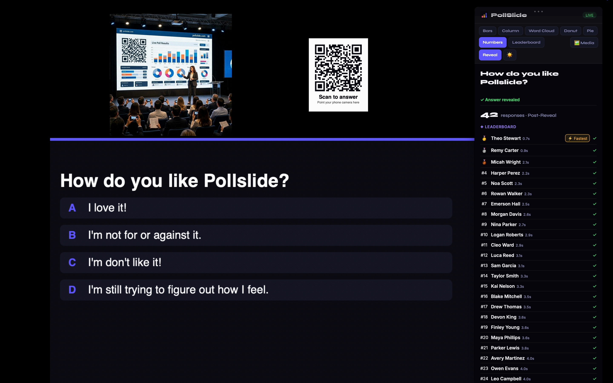
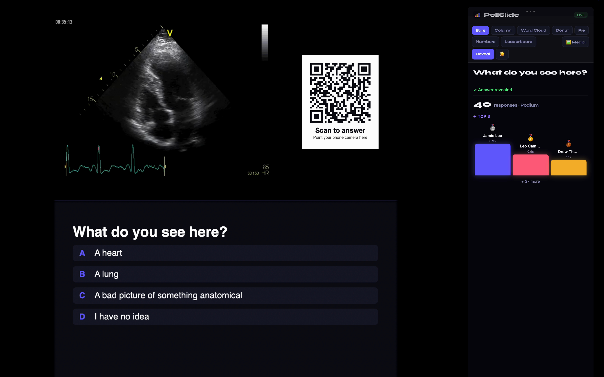
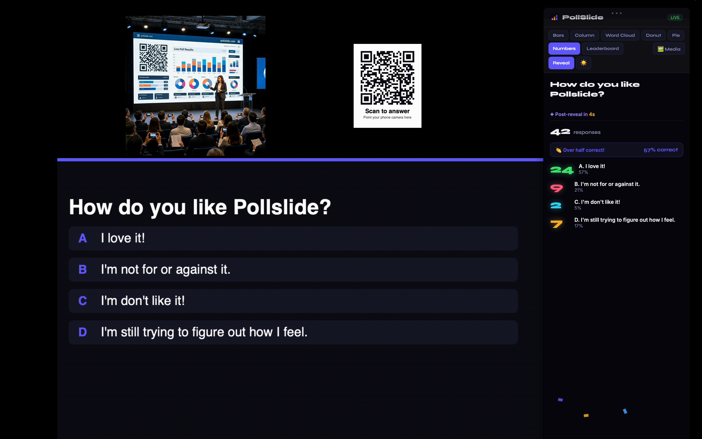
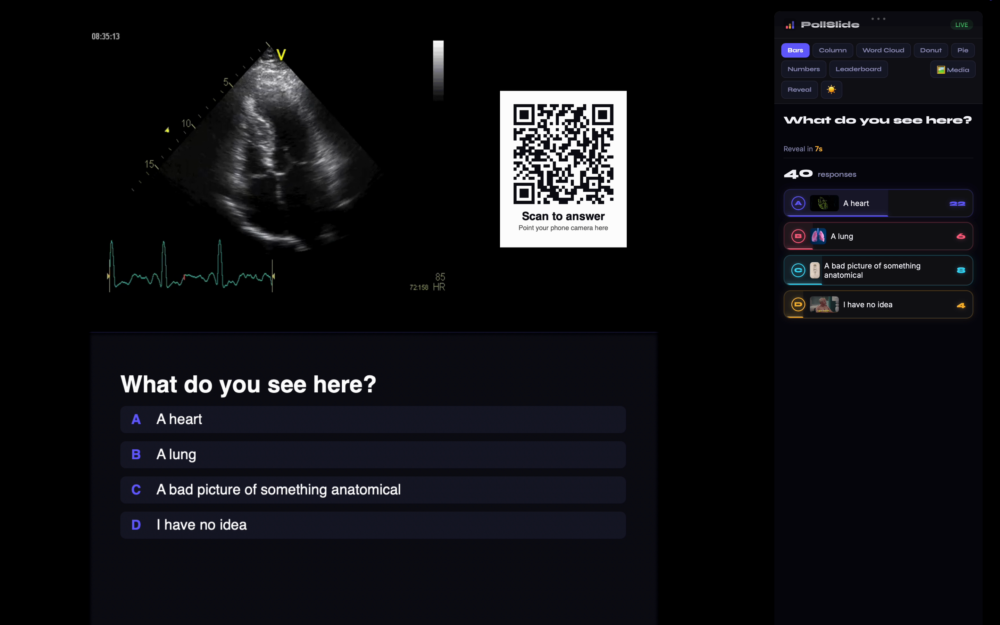
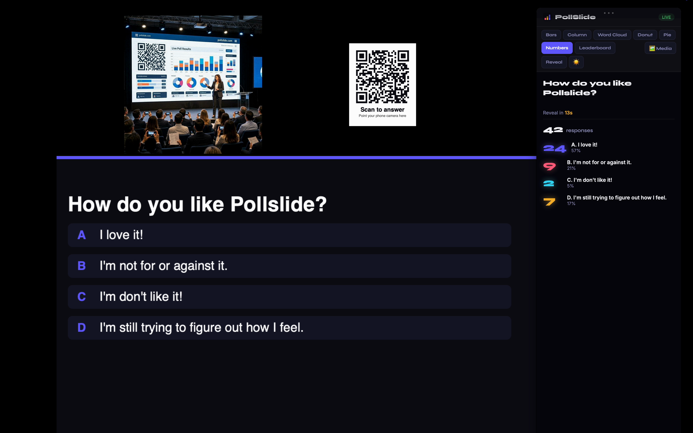
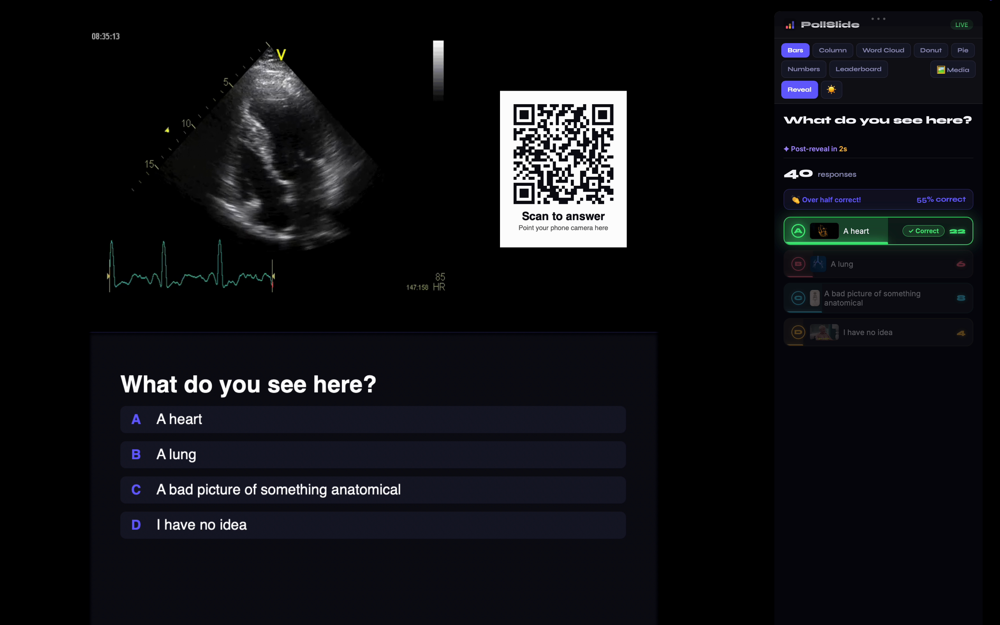

Live polls that play right over your slides.
PollSlide turns any presentation into a two-way conversation. Build questions in minutes, drop a QR code on your slide, and your audience answers from their phones — results appear instantly. This guide walks you through everything, step by step.
👋 Welcome — the 3-step idea
Every PollSlide presentation works the same way, whether it's a poll, survey, quiz, or study set.
1 · Build
Create a presentation and add questions — type them yourself or let AI draft them for you.
2 · Stamp your slide
Each question has a QR code. Drop it on your Keynote, PowerPoint, Google Slides, or a PDF.
3 · Go live
Present. Your audience scans the QR, answers, and results animate in real time.
🗳️ Create your first poll
From a blank account to a ready question in under a minute.
- Sign in at app.pollslide.com.
- Pick a product tab — for this example, 🗳️ Polls.
- Click + New Poll. A fresh presentation is created.
- Give it a name (e.g. "Team Trivia Night") and save.
- You're ready to add questions — see below.
➕ Add a question
- Click + Add Question.
- Type your question in the question box.
- Fill in the answer options (A, B, C, D…).
- Choose a question type — single choice, multi-select, rating, word cloud, or free text.
- Mark the correct answer (for quizzes) by tapping the ✓ next to an option.
🖼️ Add an image with AI
- Open a question and find the image row.
- Click ✨ Generate with AI — PollSlide creates an image from your question text.
- Pick a style (Illustration, Realistic, 3D, Cartoon, Minimal, Watercolor).
- Prefer your own? Click ⬆ Upload or paste an image / GIF / video URL.
- Use the S / M / L / ⛶ buttons to size the media on the slide.
⛶ Present
Present mode shows your question full-screen with a QR code your audience scans to answer.
- Click ⛶ Present on any question.
- Your audience points their phone camera at the QR code — no app needed.
- Watch responses roll in live. Switch chart styles anytime.
- Use 📋 Copy QR box for slide to paste the QR straight onto your own Keynote / PowerPoint / any deck.
📱 No phone to scan the QR? No problem.
Anyone on a laptop (or any browser) can join without scanning: they go to pollslide.com/join and type the code shown next to your QR. Same session, same live results.
So your audience always has both options, add this line under the QR on your slide:
📱 Scan the QR — or go to pollslide.com/join and enter code ABC123
In the app, the Share / QR window has a “Copy this line” button that fills in your real code for you.
📊 Post-reveal & results
When you reveal the answer, PollSlide celebrates with leaderboards, podiums, insight chips, and confetti.



- In the editor, choose a post-reveal style: Leaderboard, Podium, Scorecard, or an Explainer / Did-you-know card.
- Set how long after the first answer to auto-reveal (or reveal manually).
- Add optional explainer text shown after the reveal.
- Turn on auto-advance to flow to the next question hands-free.
🎉 Reveal live
- Click Reveal now (or let the timer auto-reveal).
- The correct answer highlights in green; results lock.
- The leaderboard / podium appears with names and response times.
- Advance to the next question and keep the momentum going.
🖥️ The Mac Companion
PollSlide Companion is a free macOS app that floats your live results over any presentation — it even auto-detects the on-screen QR code and shows the matching poll. Download it free →



🔗 Install & connect the Mac Companion
- Download it free from pollslide.com/download. Open the .dmg and drag PollSlide Companion into your Applications folder. It's signed & notarized by Apple, so it opens with no security warnings.
- Open PollSlide Companion — its icon appears in your menu bar (top-right).
- On the web, click your account menu → Connect Mac App to get a 6-character code.
- In the companion, type the 6-character code to pair (use Disconnect Account (Re-pair) first if you're switching accounts).
- Start presenting — the companion auto-shows the right poll when it sees your slide's QR code.
- Toggle the window anytime with the global hotkey Control-Option-Y.
👀 First-launch permission
macOS will ask for Screen Recording the first time. This is used only to detect the PollSlide QR code on your slide so the matching poll appears — nothing is recorded or transmitted. You can also run the companion without it using the hotkey above.
🧩 Poll · Survey · Quiz · Study · Present
One engine, five products. Switch from the product menu in the top-left of your dashboard.
🗳️ Poll
Quick opinion checks. Instant bars, columns, donuts, pies, or word clouds — no right answer needed.
📋 Survey
Multi-question forms your audience completes at their own pace. Great for feedback and data collection.
🏆 Quiz
Right/wrong answers, timers, scoring, leaderboards and podiums. Perfect for classrooms and trivia.
📚 Study
Flashcard sets with spaced repetition — front/back cards learners review on their own.
🎬 PresentSlide
The studio for a whole talk: import your slides (PDF, PowerPoint, Keynote or images), weave in your polls, pick a theme, and present content and live results together full-screen.
❓ FAQ
Does my audience need to install anything?
No. They just scan the QR code with their phone camera and answer in the browser.
Can I use PollSlide with Keynote, PowerPoint, Google Slides or a PDF?
Yes — any of them. Use Copy QR box for slide to paste the QR onto any slide, or run the Mac Companion to float live results over whatever's on your screen — Keynote, PowerPoint, Google Slides, a PDF, even a webpage. There's also a PowerPoint add-in.
How do I show results on the projector?
Use Present mode in the browser, or run the Mac Companion app for a floating results window that stays on top of your slides.
What's the difference between Reveal and Post-reveal?
Reveal locks responses and highlights the correct answer. Post-reveal is what shows next — a leaderboard, podium, scorecard, or explainer card.
Why does the companion ask for Screen Recording?
Only to read the QR code on your current slide so it shows the right poll automatically. Nothing is captured or sent.